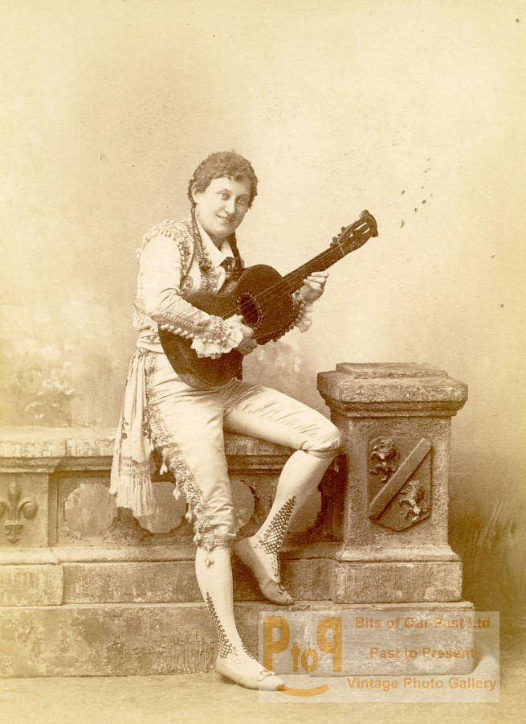
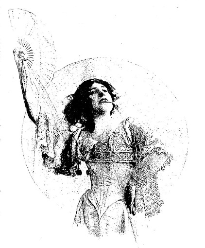
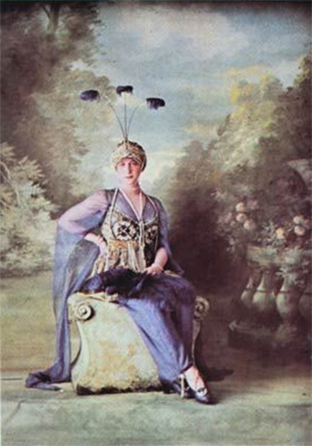
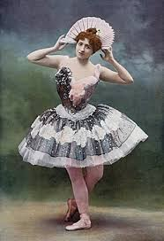

The Talkies
Theoretically the man with most to gain from the synchonisation of sound and film, given his reputation as inventor of the phonograph (which, in parallel with Frenchman, Charles Cros, he was) and, by dint of a speculative patent, supposed inventor of the first moving-picture camera (which he emphatically was not). Yet, although the idea was present in his mind from the outset, and in spite of the fact that the original peephole Kinetoscope/Kinetophone did already employ a combination of sound and image, withut any serious attempt at synchronisation of the two, very little further was done towards realising such a project by the Edison studios until a much later date.Of the team that created the Kinetoscope for Edison - the Scotsman William Kennedy, Wiliam Heise, who would act as the first camerman and Frenchman Eugéne Lauste, it was almost cetainly Lauste, to judge by later work, who was the most technically capable. Eugène Augustin Lauste (1857-1935) was born in Paris, where he showed a precocious flair for all things mechanical and is said to have held fifty-three French patents by the age of twenty-three. He moved shortly after this to New Jersey and began to work for Edison in 1887. Lauste was sacked by Edison in 1892 as part of a major staff cut-back in advance of the economic recession of 1893-1894. but was quickly recuperated by Dickson, going to work in 1894 for the Latham family, with whom Dickson was also covertly collaboring and for whom, by Dickson's account, Lauste developed both their Eidolscope camara/projector and the famous "Latham loop" that isolated the film-strip and facilitated smooth projection, a system demonstrated on 21 April 1895 and repsonsible for the first certainly known commercial public screening of a film (The Griffo-Barnett Boxing Match in a Broadway tower-store on 20 May.
Lauste's role in the development of the Kinetoscope seems, on the other hand, to have been faitly minimal and it it undoubtedly therefore Dickson who principally deserves the credit for the first combined use of image and sound (the Kinetoscope/Kinetophone itself) as well as the first primitice attempt at synchronisation through simultaneous recording, producing, for Edison in 1894, the long-lost but now famous "experimental sound film" for Edison in 1894-1895, which shows two men dancing to the barcarolle La Chanson de mousse from the 1877 comic opera Les Cloches de Corneville by Robert Planquette (1848-1903), played by Dickson himself on the violin before a huge trumpet-megaphone. The film has fairly recently been restored (1998) to incorporate the surviving cylinder, seventeen-minutes of sound film, almost certainly rather better synchronised in its modern restoration than it actually was at the time the film was made.
In 1896 Dickson, discovered is his moonlighting activiies for the Lathams and frustrated by Edison's obstinate refusal to make the obvious move to a system of film-projection, left to form part of the K.M.C.D syndicate that would create the American Mutoscope Company (later he American Mutoscope and Biograph Company) on 30 December 1895. The Lathams, despite the head-start provided for them by Lauste, were obliged by poor management and constant internal disputes to dissolve the company in 1896 and Lauste then promptly joined Kennedy at Mutoscope. If Edison, faced by the prospect of the arrival of the Lumière cinématographe in the US, finally accepted the necessity of developing a camera/projector (the Vitascope), he did so by appropriating the work of other inventors (Thomas Armat and Charles Francis Jenkins) and, in the absence of Kennedy and Lauste, little further in the way of technical innovation could be expected from that corner.
Auguste Blaise Baron (1855-1938), known in France, since the rediscovery of is work in the 1930s, as « le père du cinéma parlant » (the father of the talkies) was a photographer, musician and inventor. After seeing the Edison Kinetoscope in Paris in 1895, he realised immediately that the ultimate future of cinematography lay in a combination of projection, sound and colour and set himself the task of trying to effect this. His first apparatus for sound/image synchronisation was patented on 3 April 1896. His « graphophonoscope » There is litle evidence that the apparatus actually worked very successfully but what is interesting to note is that it envisaged a direct and simultaneous recording of both sound and image, not the "playback" system (whereby actors subsequently mimed the action in synchronisation with the sound recording) that would generally be employed during the years that followed. In a more susccesful version patented in 1898, the simultaneous recording of sound and image was effected by means of a disposif électrque (electric mtor) linking both recording devices.
Of the films made by Baron that survive, those shot in 1896-1897 were almost certainly not made with synchrnised sound. Between 1897-1900, however, Baron had the use of his newly-built glasshouse studio in Asnières (outisde Paris), almost certainly the first studio entirely devoted to the making of sound films, and the fims made during this period were certainly made with sound even if, we no longer possess the phonograph cylinders that should accompany them. They include dances, the inevitable Loêe Fuller type dance, three films of an unamed dancer in a long robe, Mlle J. Duval, Étoile de la Gaieté, dans une de ses variations and two scenes from the ballet <:>L'Étoile (1897) by Adolphe Aderer and Camille de Roddaz with choreography by Joseph Hansen and music by André Wormser (1851-1925).
Songs include Chanteuse d'opéra and Chanteur d'opéra, La Chanteuse, Petit marin sur scène, Portrait parlant et musical par une artiste de l'Opéra, Au vieux pot, a comic song set outside an inn and a film of café concert artiste Éloi Ouvrard (Ouvrard père) singing Les Trois cuirassiers.
There is a film of a trumpet-player (Joueur de cornet, a scene of boule-players interrupted by a (presumably noisy) child and dog (Joueurs de boules, a scene of Swiss wrestlers (Lutteurs suisses and another of juggling (Un jongleur. Of two films of a trained dog, one, Un dresseur de chien, where a dog jumps over a chair, is described as a « 'film musical and there was presumably similar musical accompaniment for its companion-piece, Pitrerie sur deux échelles where the same dog jumps over two stools.
Not certainly sound films are five made of Félicien Trewey doing his celebrateed imitations, involving a quick-change of hats, an act he had recreated for his friend Louis Lumière in 1896 but which was filmed by several of the early French cinematographers.
Most certainly sound films are the various recitals and monologues. Monsieur Lagrange des théâtres de Paris dans le récit du songe d'Athalie, according to Baron, was the film that particularly impressed the veteran French physiologist and inventor Étienne-Jules Marey when he saw it. Athalie is of course Jean Racine's play of 1691 and the dream - Racine at his most vibrant - is described in Act II:
C'était pendant l'horreur d'une profonde nuit. Ma mère Jézabel devant moi s'est montrée, Comme au jour de sa mort pompeusement parée. Ses malheurs n'avaient point abattu sa fierté ; Même elle avait encor cet éclat emprunté Dont elle eut soin de peindre et d'orner son visage, Pour réparer des ans l'irréparable outrage. « Tremble, m'a-t-elle dit, fille digne de moi. Le cruel Dieu des Juifs l'emporte aussi sur toi. Je te plains de tomber dans ses mains redoutables, Ma fille. » En achevant ces mots épouvantables, Son ombre vers mon lit a paru se baisser ; Et moi, je lui tendais les mains pour l'embrasser. Mais je n'ai plus trouvé qu'un horrible mélange D'os et de chairs meurtris et traînés dans la fange, Des lambeaux pleins de sang et des membres affreux Que des chiens dévorants se disputaient entre eux.
The other spoken films were Madame Baron présentant le Graphophonoscope aux séances de démonstrations, Femme récitant sur scène and Monologue avec phonographe. In Femme récitant, the ornate stage-curtain of the Asnières studio rises to reveal the woman in question and falls at the completion of her recitation. In another untitled film, a man being photographed mimes a dialogue with the cameraman.
Most of the work with synchronised was probably not carried out until 1899 but for the fact that it was carried out we have the testimony of Félix Mesguich, the former Lumière operator, and later the operator for Photo-Cinéma-Théâatre, who became Baron's chief assistant in 1899 (seated before the curtain in the photograph above):
Mesguish's The sad remarks in Baron's unpublished memoirs about the fate of his inventions are worth quaoting, for they apply, as he quite rightly points out, to a great many early pioneers of cinema, not only in France but throughout the world.
J'étais né pour être inventeur, malheureusement pour ma famille à laquelle je ne devais léguer à la fin de ma vie qu'un nom honoré et connu mais sans aucune richesse. La plupart de mes inventions découlent de la photographie, seule branche que j'avais vraiment étudiée à fond étant jeune. Ma destinée a été d'enrichir les autres par le produit de mon cerveau. C'est le sort de tous les précurseurs en France.
In 1903 he gave his canera equipment and films to the musx130 des Arts et Métiers (CNAM) where they remained until their transfer in 1970 to the CNC.
After the "rediscovery" of Baron, now poverty-stricken and almost totally blind, and of what remained of his legacy, in and around 1931, Léon Gaumont found himself uncer fierce attack in France for his failure to acjnowledge his predecessor. Uncomfortabbly, Gaumont attempted to minimise the work of Baron and even cast doubt upon the truth of it. « Ah ah ! Vous veneez pour le parlant (you come about the talkies), tHe blind old man greeted journalists who came to interview him, « J'en suis le përe (I am the father of them) ». After his death in 1938, the writer Maurice Bessy delivered one of the most damning judgements ever made of a major film producer in the journal Cinémonde (3 Februrary 1938): « Auguste Baron a découvert le parlant. Il est pauvre. M. Léon Gaumont a "utilisé" le cinéma parlant. Il est riche. » (Auguste Baron discovered the talkies. He is poor. Léon Gaumont "used" the talkies. He is rich). There is perhaps more righteous anger in this judgement than strict justice but theer are perhaps when righteous anger is appropriate and the French can, nevertheless, feel proud that such a judgement could be rendered. I rather doubt if, in the US, it would be possible to simlarly challenge the inflated reputation of Tomes Alva Edison without being accused of being "unAmerican". This is the West, sir. When the legend becomes fact, print the legend.
The issue of Baron's "paternity" of sound film is complicated by th fact that he was far from the only pioneer experimenting with sound. The German physicist Ernst Walter Rühmer (1878-1913) was a high-powered reaeacher in a number of different fields. His work on light-sensitive selenum cells had immesuareby improved the Alexander Bell telephone system (greatly increasing its range), was a pionner in wireless telephony and, by 1909, had even produced the first experimental television transmissions. As early as 1900, as part of his optical wireless telephone research, Rühmer recorded the fluctuations of the transmitting arc-light as varying shades of light and dark bands onto a continuous roll of photographic film. He then perceived that he could reverse the process and reproduce the recorded sound from this photographic strip. Although he enthused over the invention of what he called the photographophone ("It is truly a wonderful process: sound becomes electricity, becomes light, causes chemical actions, becomes light and electricity again, and finally sound."), he was an experimental scientist and not a film-maker and di not, at this time, pursue the matter any further, but the principle discovered was in practice that of "sound on film".

|
|---|
The Phono-Cinéma-Théâtre (1900), poster by Flameng of Sarah Bernhardt as La Tosca
Ange-Jacques Gabriel's' Pavilion frais (1751)
Clément-Maurice

Ange-Félicia Mallet as Pierrot
The « :Phono-Cinéma-Théâtre » opened on 29 April 1900. The programme consisted of a three-tableau excerpt from the pantomime
L'Enfant prodigue (« :Le Vol »,« :Pierrot chez Phrynette » and « :Le Retour ») by Michel Carré
(1821-1872) with music by André Wormser starring Felicia Mallet as Pierrot and Marie Magnier as Madame Pierrot. Mallet (1863-1928) was from
the original 1890-1900 cast at the théâtre de Bouffes). Magnier (1848-1913) had in fact replaced Irma Crosnier in the part of the
mother. The part of Phrynette, originally played on the stage by Biana Duhamel (1870-1910) was advertised intriguingly on tis occasion
as being played by "Mlle X". One would like to think that the part was perhaps played on this occasion by Biana's little sister
Ange-Félicia Mallet as Pierrot

Réjane and her daughter Germaine Porel photographed by Nadar in 1896
There was also a scene of mimed theatricals (« :Le Piston de Hortense ») from the second act of a three-act comedy Ma Cousine by Henri Meilhac (1830-1897), created at the théâtre des Variétés on 27 October 1890 and starring one of the monstres sacrés of belle époque theatre, and the great rival of Sarah Bernhardt, Gabrielle-Charlotte Reju
|
|
|---|
Réjane was less eager in general to perform for the camera than Bernhardt but would appear again for Le Film d'Art in 1908 and 1911 as well as starring in Henri Pouctal's propagandist wartime drama, Alsace in 1916 and appearing in a small role in Louis Mercanton's Miarka, la fille à l'ourse in 1920.
Sarah Bernhardt herself appeared in the duel scene from Hamlet with Pierre Magnier as Laertes and Suzanne Seylor as « l'homme d'armes ». The part was a new one for Bernhardt, premièred at the Théâtre Sarah Bernhardt on 20 May 1899 in a new, specially written
Sarah Bernhardt as Hamlet in 1899
The scene also shows off to best advantage Bernhardt's legs in a costume deliberately designed to be more revealing in this respect than that of Pierre Magnier's as Laertes. As Victoria Duckett has pointed out in her excellent Seeing Sarah Bernhardt: Performance and Silent Film (2015), fencing was becoming a popular sport for women in France at this time. Nothing, according to La Vie parisienne in 1884, was "more efficient in combating this modern sickness of neurosis which they all more or less suffer, for accentuating the elegance of a slender waist, or for reducing the exaggerated opulence of the bodice."

Marguerite Esquilar
Jeanne Kerwich
|
|
|---|
The majority of ths scene represented is in fact devoted to Coquelin (as Mascarille) singing an «nbsp;impromptunbsp;» that he has composed, « Au voleur » (Stop thief!), which Coquelin sings extremely (but of course deliberately) badly.
SCÈNE IX - MAGDELON, CATHOS, MASCARILLE, ALMANZOR MASCARILLE: Sans doute. Mais à propos, il faut que je vous dise un impromptu que je fis hier chez une duchesse de mes amies que je fus visiter ; car je suis diablement fort sur les impromptus. CATHOS: L'impromptu est justement la pierre de touche de l'esprit. MASCARILLE: Écoutez donc. MAGDELON: Nous y sommes de toutes nos oreilles. MASCARILLE: Oh ! oh ! je n'y prenois pas garde Tandis que, sans songer à mal, je vous regarde, Votre œil en tapinois me dérobe mon cœur. Au voleur, au voleur, au voleur, au voleur. [...] MASCARILLE: Je veux vous dire l'air que j'ai fait dessus. CATHOS: Vous avez appris la musique ? MASCARILLE: Ah moi mais pas du tout Madame ! CATHOS: Et comment donc cela se peut-il ? MASCARILLE: Les gens de qualité savent tout sans avoir jamais rien appris. MAGDELON: Assurément, ma chère. MASCARILLE: Écoutez si vous trouverez l'air à votre goût. Hem, hem. Oh! oh! je n'y prenois pas garde Tandis que, sans songer à mal, je vous regarde, Votre œil en tapinois me dérobe mon cœur. Au voleur, au voleur, au voleur, au voleur.
The original recording does exist (here in its "unrestored" state). It is not too wonderful to listen to but one needs to make allowances for its age.
Coquelin aîné as Cyrano de Bergerac
Maxime Desjardins in 1897
Attendez !... je choisis mes rimes...Là, j'y suis. Je jette avec gràce mon feutre, Je fais lentement l'abandon Du lourd manteau qui me calfeutre, Et je tire mon espadon; Elegant comme Céladon, Agile comme Scaramouche, Je vous préviens, cher Myrmidon, Qu'à la fin de l'envoi je touche ! Vous auriez bien dû rester neutre ; Où vais-je vous larder, dindon ?... Dans le flanc, sous votre maheutre ?... Au coeur, sous votre bleu cordon ?... Les coquilles tintent, ding-dong ! Ma pointe voltige : une mouche ! Décidément...c'est au bedon, Qu'à la fin de l'envoi, je touche. Il me manque une rime en eutre... Vous rompez, plus blanc qu'amidon ? C'est pour me fournir le mot pleutre ! Tac ! je pare la pointe dont Vous espériez me faire don, J'ouvre la ligne, je la bouche... Tiens bien ta broche, Laridon ! A la fin de l'envoi, je touche. Envoi Prince,demande à Dieu pardon ! Je quarte du pied, j'escarmouche, Je coupe, je feinte... Hé ! là, donc ! A la fin de l'envoi, je touche Cyrano de Bergerac acte 1 scène 4 Edmond Rostand
Arias from opera sung by popular stars were also a feature. An air from Roméo et Juliette (1867) by Charles Gounod (1818-1893) and Jules Barbier and Michel Carré (libretto) was sung by a tenor from l'Opéra, Émile Cossira (1854-1823). With a certain inevitability it was the balcony scene, filmed in costume but without Juliet and with Cossira standing in front of a very modern-looking window. When the « Phono-Cinéma-Théâtre :» films, long thought lost, were rediscovered in the 1930s, those who recalled the events were invited to reminisce for the journal L'Image. Cossira's son, Henri recalled the awkwardness of the "playback" process, with the images seemingly being recorded immediately after the sound. He remembered his father spreading his arms wide to invoke the sun (« Lève-toi, soleill ») and singing aloud then remaining motionless to mime the words over again for the camera. Henri nevertheless judged that the synchronisation was "not too bad for the period".
|
|
|---|
Jeanne Hatto in Iphigénie en Tauride in 1899-1900
Mlle Jeanne Hatto est actuellement, à l'Opéra, l'incarnation le plus parfaite du soprano dramatique. Grande, d'allure superbe, avec une physionomie d'une mobilité extraordinaire, es yeux pétillants d'intelligence, et dans toute sa personne un air crâne qui en impose aux moins timides... elle est bien la femme pour personnifier, dans tout leur éclat, les héroïnes du répertoire lyrique.
Mlle Jeanne Hatto is at present, at l'Opéra, the mot perfect incarnation of the dramatic soprano. Tall, with a superb bearing, and a physiognomy of an extraordinary unique mobility, eyes flashing with intelligence, and in all her person a brave air that imposes itself on the less timid [they mean presumably the opposite]...she is indeed the woman to personify, in all their splendour, the heroines of the lyric repertoire.
Henri Cossira in 1933 recalled an anecdote told by the artistic director, Marguerite Chenu, of something that occurred when the « 'Phono-Cinéma-Théâtre » was on tour in 1901. The cylinder for this particular film had been mislaid and Chenu and Félix Mesguich (responsible for the projection) were obliged to show it "silent". Jeanne Hatto was, however, as it happened, herself in the audience, curious to see her own film, and Chenu held her breath and sent up a little prayer. Sure enough, at the appropriate moment, the song swelled loud and clear from the auditorium to the delight both of exhibitors and audience. It was one of those magical moments of "live" cinema, in a sense entirely lost to us today, that were always possible, whether by design or, as here, by happy accident, during what people obstinately persist in regarding as "the silent era".
|
|
|---|
An original recording does exists (here in its "unrestored" state). There are several more or less contemporary recordings of this aria and this one sounds in fact like a slightly later recording.
In a rather different register, a trio from the popular operetta La Poupée (1896) by Maurice Ordonneau (libretto) and Edmond Audran (1842-1891) was sung by Belgian soprano Mariette Sully (1874-1940), who had created the title-role of Alesia on the stage, in company with MM. Fugère and Soums. This enormously popular operetta, which toured Europe for several years, is little known today but had an important influence upon the history of cinema. It has a story not dissimilar to that of the famous conte by E. T. A. Hoffmann (1776-1822), Der Sandmann (1816-1817) in which an automaton comes to life. The Hoffman tale, a classic forerunner of so much later fantastique literature and films, had already been adapted as a ballet, Coppélia, ou la Fille aux yeux d'émail (1870), by Charles Nuittier with choreography by Arthur Saint-Léon and music by Léo Delibes. Edmond Audran's operetta was a more light-hearted take on the same idea. It had opened at the Théâtre de la Gaîté in Montparnasse, Paris on 31 October 1896, played in London in 1897 for a staggering 576 performances and been partly filmed (three scenes) in Rome, during its Italian run, in 1898 or 1899, by Lumière operators, probably on the initiative of one of Lumière's Italian « concessionnaires », magician and quick-change artiste Leopoldo Fregoli, who himself acted in it. Popular on the stage, such stories of dolls and automata that come to life have an even more striking analogical significance where cinema was concerned. The operetta would form the basis for a later Lumière film (1903), Les Poupées by Gaston Velle, would be filmed in Britain by in its entirety by Ward Meyrick Milton in 1920 and would also provide the inspiration for Ernst Lubitsch's comedy Die Puppe in 1919.
|
|
|---|
An original recording does exists (here in its "unrestored" state). There are several more or less contemporary recordings of this aria and this one sounds in fact like a slightly later recording.
Mily-Meyer as Miss Lenormand in La Revue retrospective in 1899

Poster for Chansons en crinoline at the théâtre du Châtelet 1901
|
|
|---|
An original recording does exist (here in its "unrestored" state). This would appear to be a later Pathé recording, suggesting that Fleur de l'âme was the song dropped from the original show.
|
|
|---|
An original recording does exist (here in its "unrestored" state).
There were also two untitled duets with Pougaud, presumably drawn from the same show. Both are typical courtship in the same setting of a park.
|
|
|---|
Finally, the irrepressible Mily-Meyer belted out Après la bataille, which is equally not a setting of the famous Victor Hugo poem of that name but a rousing patriotic song. An original recording does exists (here in its "unrestored" state).
Louis Maurel
J'fis connaissance rue d'la Roquette Un jour de printemps D’une gentille gigolette Qu’avait dix-sept ans J’dis à la môme : Tiens, t’es gironde Sans plus d’boniment Veux-tu qu’nous vivions, ô ma blonde Marmitalement ? (Refrain) À la place Maub’ l’avez-vous vue Ou bien dans la cour du Dépôt ? C’était la plus chouette du troupeau Ma gigolette, elle est perdue Alle s’a fait chopper dans la rue
Elle jouait toutes sortes de rôles Au théâtre Chirac Et montrait le bas d’ses épaules Au milieu d’chaque acte On y a coupé la scène à faire Alors elle loua Deux fenêtres sur le derrière Dans la rue Bréda (Refrain) ,br> Lorsque j’ai connu c’tte bergère J’avais pas d’métier Elle m’apprit du côté d’Asnière L’soir à travailler Mais un soir que j’vis la volage Près d’un va-nu-pieds J’m’en suis tellement j’étais en rage Bouffé les doigts d’pieds (Refrain)
Elle avait dans la haute sphère Sut s’faire estimer Elle avait si bon caractère Savait rien r’fuser Vous y auriez d’mandé la lune Qu’elle vous l’aurait Montrée d’suite sans manière aucune Quand l’temps s’découvrait (Refrain)
À Saint-Lazare sans ses frisures E’ s’trouve, or on dit Que c’est pas solide les toitures De c’t asile de nuit Mais, s’il s’effondrait sur la tête De ces dames… eh ! bien C’qu’est consolant… c’est qu’la blanquette De veau s’rait pour rien (Refrain)
J’ai l’autre soir chez une vieille chipie Chauffé quéques actions Et l’gouvernement m’expatrie J’ai pas d’protections Quand je vogu’rai vers la Nouvelle Dans l’milieu des eaux J’roucoul’rai d’une voix fraternelle Aux petits… poissons : (Refrain)
Jules Moy (1852-1938),a performer at the famous cabaret Le Chat Noir and a comedy actor who would go on to appear in several films 1916-1936, performed four comic monologues, of which only two survive as films, Le Maître de ballet and Une poule introduite dans un concert. An original recording does exist for the first of these (here in its "unrestored" state).
A recording also exists for another Moy monologue, largely sung after a fashion, J'ai le pied qui remue for which the film is lost. A fourth monologue, Concert arabe, is entirely lost.
Jules Moy (on the left) with band-leader Armand Bemard in the 1927 film Rue de la paix
Oui, j'ai tourné mon premier film sonore à l'Exposition de 1900. Ça s'appelait le « Phono-Cinéma-Théâtre ». Il fallait s'habituer à parler en même temps que les images passaient. Quand on avait peu de choses à dire ça allait. Mais quand il fallait « synchroniser » (le mot n'existait pas encore) une longue tirade, ça n'allait plus du tout.
Yes, I made my first sound film at the Exposition of 1900. It was called the « Phono-Cinéma-Théâtre ». One had to get used to speaking at the same rhythm as the images that were shown. When one didn't have much to say, that was fine. But when one had to "synchronise" (the word didn't exist yet) a long tirade, that didn't work at all.
The point made by Moy here explains a great deal about th repertire of the early "talkies" and why they almost invariably tended to privilege scenes of song and dance over the spoken word. The latter was simply far more diffuclt to synchronise. Unsurprisingly the pioneers who ventured furthest with the spoken word were those, like Auguste Baron and later Henri Joly, who had devised an electrical device to create an automatic link between cinematograph and phonograph. Yet even when this process was generally automised (after 1907), the prejudice in favour of song and dance remained. It was perhaps the greatest weakness of these early "talkies'".
Essentially film-producers laboured under a misconception that it was these aspects of sound that must necessarily be most interesting to audiences. It rarely occured to them - and it is perhaps counter-intuitive - that is was the perfectly ordinary spoken voice that they were principally interested in hearing. Even after 1927-1928, and despite the sensation caused by the famous incidental piece of well-worn Jolson stage-patter in the part-talkie The Jazz Singer ("you ain't heard nothing yet"), the misconcpetion persisted, as witness the excessive number of musicals produced in 1929-1930, many completely abysmal, which came close to making the public thoroughly sick of the "sound" revolution they had so enthusiastically welcomed.
|
|
|---|
More "spoken word" was provided by French café concert comedian and singer Paul Marsalés dit Polin (1863-1927) who performed a comic monologue, Troupier pompette. This genre, the « troupier comique » (the comic soldier), was a Polin speciality derived from the many comedies of military life written at the end of the nineteenth century by Georges Courteline (1858-1929), of which the most enduringly famous is the 1886 comedy, many times filmed over the years, Les Gaietés de l'escadron. In 1906 Polin would, along with fellow caf'conc' stars Félix Mayol and Dranem, record for both camera and phonograph for Alice Guy at Gaumont a whole series of « phonoscènes », twelve in all, in what amounted to a kind of "best of" compilation (« Polin dans ses créations ») and an effective film-record of the singer's career.
|
|
|---|
Although the theatrical pieces produced for the were sensational enough, it must in some respects the remarkable dance-programme that was the highlight of the show. Like the great and the good of the legitimate thatre, the major dance-stars tended to turn their nose up at cinema; even Alice Guy at Gaumont, who showed a very particular interest in dance-films from an early stage in her career, had to rely largely on dancers of second rank. Here Vrignault-Chenu has managed to assemble a really rather remarkable line-up of first-rate stars. The Italian Achille Viscusi (1869-1945) was not only a dancer but one of the most important choreographers and dance-teachers of the day, as was Jeanne Chasles (1869-1939), director of the Opéra comiique and later (1915) professeur de danse at the Paris Conservatoire. The Belgian Joseph Hansen (1842-1907), who choreographs one of the ballet-scenes, was had worked in London and Moscow before becoming Maître de ballet at the Palais Garnier (1887-1907). Michel Vasquez (1855-1903) was later Maìtre de Ballet at l'Opéra (1902-1903).
|
|
|---|
Rosetta Mauri

Christine Kerf in Terpsichore
Christine Kerf (1875-1963), a star at l'Opéra Comique, would go on to appear in four films (1912-1922)
The Spanish dancer Rosetta Mauri Segura (1850-1923) was approaching the end of her career - she had actually retired from dancing
in 1898 - but would teach at l'Opéra until 1920. She was succeeded in her roles by the Italian Italian Carlotta Zambelli (1875-1968),
who would go on to be one of the was one of the great stars of l'Opéra, later known as « la Grande Mademoiselle », and who
would leave in 1901 for a tour in St. Petersburg. Zambelli herself retired from dancing in 1930 but taught for a further twenty-five
years, a career at l'Opéra of sixty-one years in all. According to dance-critic André Levinson (1887-1933), Zambelli exemplified
« la ferveur italienne, tempérée par la mesure française '» (Italian fervour tempered by French rhythm), which produced
Christine Kerf in Terpsichore
une exécution pondérée, nuancée et infiniment vivante... Son jeu est aigu, incisif, brillant ; ses pas ne sont pas ébauchés à l’estompe, mais tracés au burin. Aucun excès de sensibilité, mais infiniment d’intelligence... Ce qui enrichit l’art subtil de Carlotta, fait d’intuition et de discipline, d’un attrait exceptionnel sinon unique, c’est sa suprême musicalité, c’est la naissance de chaque pas de l’esprit même du rythme, la concordance absolue de l’impulsion sonore et de l’essor saltatoire.
Carlotta Zambelli
a performance, deeply considered, nuanced and infinitely lively.....sharp, incisive, brilliant; her steps are not produced with a stump but traced with a fine engraving tool. No excess of sensibility, but an infinity of intelligence....What enriches Carlotta's subtle art, formed from a combination of intuition and discipline, of an exceptional if not unique attractiveness, is her supreme musicality; it is the birth at each step of the spirit of rhythm itself, the complete concordance of the impulse of sound with the sweep of her curvet.
A pupil, Lycette Darsonval (1912-1996), later herself directrice of the ballet de l'Opéra and of the ballet de Nice, once said of « la Grande Mademoiselle » that she taught dancers « à n’être pas que des automates (not just to be automata) « mais à pénétrer aussi l’esprit d’un ballet, à observer les jeux de l’expression. » (to penetrate the spirit of the ballet, to observe the play of expression).
|
|
|---|
The composer Camille Saint-Saaens (1835-1921) was another who stressed Zambelli's musicality, considering that, « au point de vue du rythme et de l’union profonde de la danse et de la musique (from the point of view of rhythm and the prodound harmony of dance and music), she was « la danseuse la plus étonnante que j’ai jamais vue » (te most astonishing dancer I ever saw). It was this aspect too that she herself chose to emphasise:
Il faut que l’artiste soit lui-même sensible à cette harmonie, c’est dire qu’une culture artistique est nécessaire. Particulièrement une grande culture musicale, sans laquelle la partie essentielle de ce tout complexe qu’est un ballet lui reste étrangère.
The artist must herself be sensible to this harmony; that is to say, that an artistic culture is necessary, particularly a great musical culture, swithout which the essential part of the complex whole that is ballet will always remain closed to her.
|
|
|---|
Paul Nadar, Cléo de Mériode
Paul Nadar, Cléo de Mériode
|
|
|---|
a
Jean-Alexandre-Joseph Falguière, La Danseuse
poster for Les Folies bergère
Yet, although the two were often popularly seen as rivals, they had in reality little in common. Unlike the flamboyant and opportunistic Otero, Cléo de Mérode took her dancing, even if it became of a distinctly eclectic nature, perfetly seriously and, again unlike Otero, always denied the imputations alleged by her detractors. As late s 1955 she would successfully sue Simone de Beavi=oir after the feminist had sourly referred to her as a « cocotte :» in her 1949 book Le Deuxième Sexe.

|
|
|---|
|
|
|---|

|
|---|
Other dancers who appear, minor only by comparison with the big stars, were the three dancer-daughters of Louis-Amedée Mantes, Suxanne, Louise (1880-1999) and Blanche and Sandrine Violat, all of whom were regular dancers at ;'Opéra. The Mante sisters were known punningly as « Mantes-les-Jolies » because of the town of Mantes-la-Jolie, now a very unpretty-suburb in the Paris sprawl. Described as « danseuses mondaines », they would record several « 'phonoscènes » for Alice Guy at Gaumont in 1906.
|
|
|---|
Louis-Amedée Mante (1826-1913), himself appears nowhere in the programme and is not amongst the credits, but it does not seem yoo fanciful to suppose that he played a certain role in its evolution. bass-player with the orchestra of l'Opéra, The Mante ssiters were not only frequently photographed by their father but also painted by Edgar Degas (1824-1917), who had known them from childhood.
| 
|
|---|
As regards the content of the programme, it is as remarkable for what it does not contain as for what it does. There is for nstance no "Loïe Fuller" dance, what would later be though of as "modern dance". Wgen one considers that, apart from the British who seem at this time to have had little concept of dance beyond jigs and highland flings, virtually every film-maker of the period from Mx Skladanowky in Germany to Lumière, Pathé, Demenÿ and later Guy for Gaumont, Méliès, Parnaland, Joly, Léar and Pirou, Mendel, Baron, Nadar, De Bedts and, across the Atlantic, Edison, Mutoscope, Lunin and Selig, there is not a single one that did not jump on the bandwagon of Fuller's surprise success at the Folies bergère and produce at least one example of some dancer or other - never Fuller herself - twirling around in a furry of bedsheets. Given the constant parade of such Fuller dance-alikes, the omission here is very striking and must quite clearly be the result of a deliberate decision not to include such a film.
Then again, although the programme is, as we shall see, far from austere or lacking in passion and sensuousness, and contains much exotic and "orientalist" material, there are no belly-dances or spear-waving Ashanti. There are no Barrison sister, the "wikedest girls in the world" offering to show the audience their pussies; they had kittens strapped int their knickers. There are not even any of the popular novelty dances (the cakewalk the kickapoo, the tough dance, the apache dance, the shimmy), that were beginning to become popular in the US and would in time come to dominate the dance-repertoire of films. Instead what we have is a high-quality programme of an interesting variety but of a certain artistic seriousness that is enormously to the credit of Marguerite Vrignault-Chenu, herself a dancer, as artistic director. It is also in looking at the dance-programme that one appreciates fully the way that the « Phono-cinéma-théâtre » situated itself at the heart of the Paris Exposition as a whole and deveoped many of its most important themes and motifs.
If the concept of "modern dance" was too novel or, more probably, just too amateurish to merit inclusion, the other important tendency of the period, what was known as the "cosmopolitan" dance, is very strongly represented. This too was ubiquitous and could have its distinctly trivial side. Take for instance one of the least of the glitterati to appear in the show, Sandrine Violat - we do not know her dates; we do not even know her first name. She was however a regular performer at l'Opéra and later at the Palais Garnier.
TThe Palais de la Danse advertised itself at this time as providing "a history of the dance in ballets" with "dances from all countries".
|
|
|---|
This cosmopolitanism was in the image of the times. It reflected in part the huge ineterest in the cultures of other lands and of other peoples that had burgeoned as a result of colonial expansion and, just as importantly, of the massive growth in tourism. It was in the image too of the International Expositions. Finally it was also in the image of the dancers themselves who were themselves of different nationalities and who not only toured frequently (especially to Moscow and St. Petersburg which had become the most important centers of dance outside Paris) but also worked abroad. Achille Viscusi wuld spend most of his career in a country he knew as Bohemia when he first went there a artistic director of the in 1900 and as Czechosloakia when he worked there during the inter-war years, years in which the country was not only one of the most prosperous in Europe, and indeed the world, as any Czech or Slovak will proudly tell you, but was also one of the most culturally dynamic.
|
|
|---|
poster for Terpsichore in Le Théâtre

Marie-Thérèse Gamalery dite Madame Mariquita (1841-1922) was an Algerian-born dancer of Spanish descent who had a remarkably varied career and was quite possibly the most famous maîtresse de ballet of the Belle Époque. She had made her début at the Funambules, in the dingy boulevard du Temple (nicknamed « boulevard du crime », later famous as the setting for Marcel Carné's Les Enfants du paradis, then worked her way up successively to théâtre des Bouffes-Parisiens, the Teatro Variedades in Madrid (where she presumably learned the flamenco), théâtre de la Porte Saint-Martin (whose director, Marc Fournier, she married). By 1871 she was maîtresse de ballet at the Folies bergère but continued to dance herself in theatres of all kinds (Châtelet, Gaîté, Bouffes-Parisiens, Variétés, Porte Saint-Martin, the London Lyceum, the théâtre Lafayette in Rouen, thr Skating in la rue Blanche, etc.). Maîtresse de ballet at l'Opéra Comique (1898-1920), in addition to her work at the Folies, she was also director of choreography of the Palais de la Danse at the 1900 Exposition. This did not prevent her from also dancing herself from time to time at « La Feria » restaurant in the Spanish Pavilion in the Rue des Nations.

|
|---|
The entire ballet consisted of three separate tableaux, each representing a different country - Spain, Italy and Greece. Un mariage aux flambeaux, In 1900, the Ballet de Terpsichore (Un Mariage aux Flambeaux), danced by Christine Kerf and Achille Viscusi for the « Phono-cinéma-théâtre », set in the Alhambra at Granada, was the Spanish scene, featuring characters based on Carmen, Kerf as « la cigarrera » and Viscusi as a matador while the dance itself was a flamenco. Le Matin, which had reviewed the stage-show on 27 May 1900, singled Kerf out for praise for « l'élégance et la fureur » of her performance, describing her as « une danseuse étonnante ». An extened article by critic Gabriel Pitté consecrated to Terpsichore in La Grande Vue provides a fuller account:
Tout en satin blanc, une fabricante de cigares se penche, brille, tourbillonne et s'enflamme, poursuivie et hantée par un torero agile, un torero tout en satin blanc comme elle et qui, vertigineux, plein de désir passionné, tremble frénétiquement sous ses jupes un tambourin tintant. Presque accroupi sous ses pas, on dirait qu'il infuse la montée de son désir ardent : la fabricante de cigares, après chaque pause, se penche de plus en plus abandonnée, puis se lève et repart, volant au-delà. Six Andalouses vêtues de longs châles, la fleur de la grenade à l'oreille, rampent dans leur ombre, les suivent pas à pas, enivrant le couple avec untumulte déchaîné d'olés, de tambourins et de gais castagnettes : au fond, au fond des arches maures, les guitares étincelantes et les torches qui rougissent, saignent dans le bleu de la nuit : c'est toute l'Espagne et tout Grenade.
Achille Viscusi and Christine Kerf in Terpsichore
All white satin, a cigar maker leans, shines, swirls and flames, pursued and haunted by an agile bullfighter, a bullfighter, all white satin like her. who, dizzyingly, full of passionate desire, frantically shakes beneath her skirts a tinkling tambourine. Almost crouching under her feet, he could be said to be infusing the mounting ardour of his desire: the cigar maker, after each pause, inclines in a more abandoned, then gets up and leaves, flying away. Six Andalusian girls dressed in long shawls, with pomegranate flowers in their ears, creep in their shadow, following them step by step, intoxicating the couple with a raging tumult of olés, tambourines and cheerful castanets: in the background, behind the Moorish arches, the jangle of guitars, and the glowing torches that bleed in the blue of the night: it is all Spain and all Granada.
For the « Phono-cinéma-théâtre » version it would seem from Pitté's account that the six Andalusian dancers were replaced by an entire corps de ballet specially imported from Granada so that « leurs coutumes quelque ... dangereuses » (their somwhat...risqué costumes) « pour être exposés avec toute la fougue de la jeunesse devant les regards excités d'un public cosmopolite » (could be displayed with all the élan of youth, before the excited regard of a cosmopolitan public). While this show in full could also be seen live at the Palais de Danse in the Rue de Paris,

|
|---|
poster for Jules Massenet's opera Le Cid at L'Opéra on 30 November 1885
the Kerf-Viscusi flamenco and the Zambelli-Vasquez habanera or catalane constituted only a small part of the Spanish dance available at the Exposition. An Andalouisan dance-troupe could also be seen in L’Andalousie au temps des Maures at the Trocadéro while other Spanish dancers featured in the Panorama de La Tour de Monde at the Théâtre Exotique in the Champ-de-Mars, at the « La Feria » restaurant in the Spanish Pavilion in the Rue des Nations and, from time to time, at the Pavillon Bleu in the shadow of the Tour Eiffel. There was apparently even a spectacle Las sevillanas being performed in the reconstructed « Vieux Paris » along the banks of the Seine.
|
|
|---|
Flamenco had first come to Paris in 1879 when the troupe of Antonio Calzadilla performed at the Hippodrome in December(and subsequently at various other Paris theatres during 1880) and Spanish popular music continued to remain popular. It had already featured strongly in the 1889 Paris Exposition, following as it did hard on the heels of Spain's own first international Exposition, the 1888 Exposition in Barcelona. Bizet's Carmen celebrated its four hundredth performance at l'Opéra comique that year and Emmanuel Chabrier's rhapsody for orchestr, España, was all the rage in the Parisian concert-halls.

|
|---|
« Aimez-vous l'espagnol; :? » became a popular cachphrase.The critic and folk-music specialist Julien Thiersot wrote in his Promenades musicales à l'Ezposition:
Aimez-vous l'espagnol ? On en a mis partout. Course de taureaux à droite, course de taureaux à gauche ; société chorale espagnole par-ci, soirées espagnoles par-là ; au Cirque d'hiver grandes fêtes espagnoles, orchestre, danse, estudiantine à l'Exposition les gitanas de Granade. L'Espagne abuse : en vérité c'est trop pour un seul homme, de contempler et froidement analyser tant de séduction
Do you love things Spanish? They have put them everywhere. Bullfights to the right, bullfights to the eft. Spanish choral society this way, Spanish evenings that way. At the Cirque d'hiver big Spanish fiestas, orchestra, dance, student groups. Spain goes too far, In truth, it is too much for a single man to contemplate and coolly analyse so much seduction/
The gitanas particularly
There was a certain continuity between the Expositions universelles of 1889 and 1900. If both represented shining examples of modernity and prgress (symbolised by « La Galerie des machines l» in 1889 and by the omnipresence of electicity - « la fée électricté l» as "she" is called in French - at the 1900 Exposition, both also sought to place that modernity and progres within a larger context of human diversity and human evolution. This conveniently allowed for a flamboyant display at both Expositions of France's colonial grandeur, much expanded towards the turn of the century at the expense of the few remaining independent countries of Africa and South-East Asia. At a period when evolutionary theory was heavily impregnated with eugenics, this inevitably implied, in general terms, a display of the coloniser's innate superiority over the relatively primitive peoples colonised,envisaged as belonging to earlier stages of human development.

|
|---|
The 1889 Exposition was the first to devote itself on a large scale to its « section coloniale » with the « pavillons coloniaux » and their adjacent side-shows and cafés-concerts occupiying an area of 28,850 square metres pn the Esplanade des Invalides, 10,646 square metres of which consisted of the « pavillons » and « villages », a further 6,300 and 5,300 square metres, respectively, to the « grandes expositions&nbs[;» of Algeria and Tunisia. Within this area, apart from various kiosks dispensing snacls, waffles and ice-creams, there was also an annamite restaurant (130 square metres), a créole restaurant (100 square metres(, an algerian café-concert, a « café maure », with a « café-restaurant javanais » situated to the south pf the area reserved for the French colonies in the « kampong javanais » of the Duch East Indies.
|
|
|---|
In 1900 the « section coloniale », on the hill and gardens of the Palais du Trocadéro, covered an area of 33,949 square metres (buildings) and a further 16,254 square metres (open spaces). There was a large two-storey algeran restaurant, a café maure and various bars wheer one could taste eau-de-vie from the Indian Ocean island of Réunion, rum from Martinique, cofee from Nouvelle-Calédonie and so on.
Much of the attention focused on the more exotic aspect of these Expositions has, quite rightly, seen them within the vontext of "orientalism", a term that, although it is a much older usage, has become indeliliby associated in modern times with the 1970 book of that title by Palestinian scholar Edward Wadie Said (1935-2003). Said, however, was using the term within a very political sepcific context and never intended it to become the rather glib rallying-cry for a generalised "anti-colonialism" that contents itself with for the most part with the ragbag of simplistic half-truths that comprise what is called "post-olonial discourse". "Orientalism", like any popular view of other cultures or of other periods of history, is certainly a form of mythologising but it is not part of a coherent "project" (to borrow from the heavy-handed, ahistorical newspeak of the "social sciences") nor is it one homogeneous phenomenon.
Japanese art was in high esteem in France at this time. The Japanse ukiyo-e » (floating world) art movement that had flourished under the Tokugawa shogunate (1603-1868) was an important influence on the Impressionists and other contemporary French painters. High prices were paid for very collectable works by Outamaro and Hokousai to whom the writer and critic Edmond de Goncourt (182201896) had devoted books in 1891 and 1896. In 1889 Le Guide Bleu du Figaro et du Petit Journal enthused over the Pavillon japonais - « des soieries, des porcelaines, des cloisonnées, des laques, des scultures. Mille richesses arrêtent retiennent » (a thousand riches retain the attention) and the art historian Raymond Koechlin (1860-1931), visting the pavillon japonais in 1900, regretted the "egotistical classicism" of certain Europeans that was all that prevented Japanese (and for that matter Chinese) art from taking the place alongside European art which was rightfully theirs.
French musicians influenced by Japan included Camille Saint-Saëns (1831-1921) whose opera La Princesse jaune with a libretto by Louis Gallet (1835-1898) had appeared in 1872 at l'Opéra comqique. Le Rêve (1890) was a ballet with music by Léon Gastinel (1823-1906), a libretto by Edward Blau and wih choreography by Joseph Hansen. It contained, in the second act, a pantomime, Mikagouva, also known as « le pas de la robe de chambre :», which had been specially written for Rosita Mauri who had come out of retirement to perform it and here danced it yet again, ten years later, for the camera of Clément-Maurice. To judge from the critical notices, it proved one of her greatest triumphs.
|
|
|---|
According to one critic who witnessed the original production, Mauri plays a woman who, although supposedly Japanese - la gitanilla de Tokio (the little gypsy or Tokyo), according to one critic - has the rather unJapanese name of Dalta and who has been given her first long dress. sewn for her by the fairies, along with a sacred fan and, after a suitable swish of the latter, to an accompaniment of flute and harp, she « parcourt le théâtre avec une joie enfantine » (runs through the theatre with a childish joy), stopping from time to time to admire herself in her dress, then proceeding triumphantly on her way. She was « bissée » (called on to perform an encore) and, according to the critic, they would have liked to have « trissée » (called for yet another encore), so delightful was the dance - « un véritable petit trouvail » (a real little find). Another critic (Le Radical) described it as « un bijou choréographique et musical » (a choreographic and musical jewel), Another (Le Gaulois enthused at greater length:
Mlle. Mauri y monte plus que jamais de fine et légère fantaisie, d'art délicat, de virtuosité spirituelle, nuancée de ci de là, de tendresses et de langoureux abandons.. J'ai parlé de Mlle, Mauri qui mime et danse le rôle de Dalta. Cette denseuse exquise n'a jamais été plus en verve. Elle a des hardiesses de légèreté qui lui sont toute naturelles. Quand l'on le revêt, au second acte, de l'ample robe des déesses, et que l'on confie ;'éventail sacré, elle marque des étonnements ravis, elle dégage une séduction étrange, et rien de plus gracieusement fantasque que la façon dont elle rejette derrière elle, en dansant, la draperie surabondante. ...Mlle. Mauri plaît par la caractère spontané de son talent elle semble touhours danser et mimer improvisant, et toujours elle est vive, amusante, et ausi vraie que le comporte son art. Parfois, une nuance de sensibilité colore son caprice. Et le charme est autant plus vivant qu'il est plus francheent rythmique sous la constante liberté des mouvements.
At the other extreme of the (very broadly) orientalist register wre the peoples of sub-Saharan Africa or Oceania. Much of the indignation of "post-colonialists" has focused on the phenomenon of the « village nègre », not new in 1900 nor even in 1889, but incorporated really for the first time at the earlier date into the wider In 1889 four hundred
Between these two extremes came the very different, and very differently percieved, colonial worlds of North Afica (the Maghreb and Egypt),dominantly arab in culture, and that of the far East, represented by the French colonies of Annam and Cambodia (French Indo-China) and, a slightly anomalous honorary presence at both Expositions, Java in the Dutch East Indies. It was in the area devoted to the former that, in 1889, one found the notorious The foreign pavilions were to be found in 1889 on the Esplanade des Invalides. The Annamite Theatre was to the left of the central avenue in the middle of the Esplanade, while the « kampong javanais » was near the end of the Esplanade. The theatre showed long dramatised epics with improvised dialogue, accompanied by an orchestra of six musicians, five grouped around the perfomers while the sixth remained in the background, punctuating the performance from time to time on a drum. In the Javanese pavilion, a village had been set up. Here sixty Javanese people went about their daily tasks of cooking, making batiks and, most importantly, making music and dancing. A second orchestra played marching music used to accompany the performers when they processed through the compound.
In 1900, the Javanese orchestra, the « gamelan-goedjin », was again present to accompany the dances, music, according to Émile Verhaeren "like flowing water" that "animates these dances, these calm, chaste and tranquil dances. it has neither beginning nor end; one would say that it forms part of the unceasing movement of the universe". In respect both of exoticism and of authenticity (however judged), the Javanese dancers rivalled the Spanish gitanes as the stars of the.Exposition.
It is symptomatic of the much greater respect showed to the Indianised culture of South-East Asis, that the Cambodian dancers, associated with the court of King Sihanouk Edmond de Goncourt, a notable cynic who neverthless attended the Exposition assiduously, found the Cambodian display particularly disquieting:
À l’Exposition. Antiquités cambodgiennes. Ces monstres à bec d’oiseau, qui ont l’air d’appartenir à une période d’êtres plésiosauriques, ces sphinx en forme de cynocéphales, ces éléphants à l’aspect d’énormes colimaçons, ces griffons qui semblent les féroces paraphes d’un calligraphe géant en délire Et au milieu de l’ornementation de queues de paon, d’yeux de plumage, ces attelées d’hommes à la pantomime inquiétante, et ces danseuses, aux formes de fœtus, coiffées de tiares, au rire héliogabalesque. Oh ! ce rire dans ces bouches bordées de lèvres, comme on en voit dans les masques antiques, et encore ces têtes avec des oreilles semblables à des ailes de chauve-souris, et avec l’ombre endormie et heureuse qu’elles ont sous leurs paupières fermées, et avec l’épatement sensuel, et avec la léthargie jouisseuse d’un sommeillant en une pollution nocturne...Tout ce monde de pierre a quelque chose d’hallucinatoire qui vous retire de votre temps et de votre humanité.Exotic dance.......
The composer Claude Debussy, who first encountered Javanese music at the 1889 Exposition and was hugely influenced by it, was of quite a different opinion. In 1913 he would write:
Il y a eu, il y a même encore, malgré les désordres qu'apporte la civilisation, de charmants petits peuples qui apprirent la musique aussi simplement qu'on apprend à respirer. Leur conservatoire c'est : le rythme étemel de la mer, le vent dans les feuilles, et mille petits bruits qu'ils écoutèrent avec soin, sans jamais regarder dans d'arbitraires traités. Leurs traditions n'existent que dans de très vieilles chansons, mêlées de danses, où chacun, siècle sur siècle, apporta sa respectueuse contribution. Cependant, la musique javanaise observe un contrepoint auprès duquel celui de Palestrina n'est qu'un jeu d'enfant. Et si l'on écoute, sans parti pris européen, le charme de leur « percussion », on est bien obligé de constater que la nôtre n'est qu'un bruit barbare de cirque forain.Perhaps the most eloquent testimony concerning the Javanese dance comes from the pen and brush of the US artist John Singer Sargent
...] There have been, and they still exist, despite the disorders which civilisation brings in its train, charming little peoples who learned music as simply as one learns to breathe. Their conservatoire is the eternal rhythm of the sea, the wind in the leaves, the thousand little noises which they listen to carefully, without ever consulting arbitrary treatises. Their traditions only exist in very old songs and dances to which each one of them, throughout the centuries, brought his respectful contribution. Nevertheless, Javanese music is characterized by an art of counterpoint compared to which that of Palestrina is mere child's play. And if we listen, forgetting our European prejudices, to the charm of their «percussion» we are forced to admit that ours sounds like the barbarous noise of a travelling circus.
As Van Troi Tran points out in his excellent doctoral thesis Manger et boire aux Expositions universelles de 1889 et 1900 (2010), the "cosmopolitanism" of the Expositions (a phenomenon not dissimilar to that which we now dub "globalisation") really took the form, as arguably it still does, « d'un collage et d'une superposition de représentations locales, régionales, nationales et coloniales » (a collage or superimposition of representations of the local, national and colonial). The resulting patchwork was genuine enough in its way (as genuine as such aspirations towards "universality" ever are or ever can be). It served the interests certainly, inter alia of colonial expansionism, but also, on a more profound level, a more long-term process a srt of "collage If the Paris Exposition of 1900, like its various predecessors, exalted an image of the cosmpopolitan, it also, paradoxically, encouraged the opposite tendency, a kind of politics of nostalgia. If the Expositions reconstructed buildings and scenes associated with different countries, peoples and cultures, they also attempted to reconstruct the past. In 1900 the quais de la Seine wre home to « Le Vieux Paris », conceived by the historian Albert Roblida, a meticulous reconstruction of Paris at different historical periods which extended over an area of 6500 metres where various spectacles were mounted and where a "population", dressed in costumes of the different epochs, was kept in a constant state of animation throughout the Exposition.
|
|
|---|
|
|
|---|
Nadar, Julia Bartet

Emma Sandrini dancing in Danses de naguère et de jadis (1900)
Another show that had been specially prepared for the 1900 Exposition was Danses de naguère et de jadis, with a composite
score by Paul Vidal (1863-1931), based on twenty-eight airs from the past (ranging from works by Rameau to those of the contemorary
composer André Wormser). Produced by the opera-singer and theatre director Pierre Samson Gailhard Emma Sandrini dancing in Danses de naguère et de jadis (1900)
One sees in this extraordinary pot-pourri, a really rather remarkable combination of the scholarly and the dilettante, the fascination with both an imagined past and an imagined present, interests, variously rpresenetd that are local, national and cosmopolitan. Once aagin it is the effect of a collage or patchwork, in the image of the Expositions' own aspirations to universality.
In talking of MM. Gailhard, Vidal and Hansen « à qui l’on doit cette œuvre de grand art (to whom we owe this great work of art), one crtic empasises howont pris tous les Tanagra, ont étudié les diverses poses des danseuses antiques, ont cherché la première position de la danse. Les autres positions ont découlé de celles-ci. M. Vidal alors a appliqué au rythme donné par la reconstitution des mouvements antiques, les œuvres des divers compositeurs qui pouvaient le mieux les accompagnerLa Gavotte from this same show, described as « une danse ancienne » and featuring Cléo de Mérode in fact had music by a contemporary composer Marcel Samuel-Rousseau. It could be seen on film at « Le Phono-Cinéma-Théâtre » but could have also been seen elsewhere, like Terpsichore, live as part of the entire spectacle. It was performed at two of the great landmark-buildings of the Exposition, first performed on 10 August 1900 at the Palais de l'Elysée (entirely rebuilt in the course of the two Paris Expositions of 1889 and 1900 in place of the Palais de l'Industrie of 1855 as « le Grand Palais des Beaux Arts et des arts décoratifs » and « le Petit Palais de l'art français » and then on 11 November 1900 at the Palais du Trocadéro (originally built for the Exposition of 1878 but a centrepiece of the 1900 Exposition where it overlooked the colonial pavilions constructed in the surrounding gardens).
Le Palais de la Trocadéro in 1900
The scholarly choreographer Laure Fonte had also worked on French dances of the seventeenth and eighteenth centruy and written an important book on the subject, Les Danses de nos pères (The Dances of our Fathers), which appeared at around this time.
Dances included were Danse des Incroyables, Danse Directoire and Danses slaves (all with music cellist, panist and composer William (1861-1933) Marie), the first danced by Blanche and Louise Mante of l’Opéra, the second by Jeanne Chasles of l’Opéra-Comique and Achille Viscusi of the Palais de la Danse, Danse javanaise, danced by Cléo de Mérode, The dancer and choreographer Jeanne Chasles from l’Opéra-Comique appeared in a very mouvementée dance, Le Pas du petit faune from Le Cygne and Le Pas de la Sabotière from the ballet La Korrigane (1884) by François Coppée and Louis Mérante with music by Charles-Marie Widor (1844-1937) was danced by Rosita Mauri and two of the Mantes sisters (Violat and Suzanne)
Clément-Maurice and Marguerite Vrignault-Chenu, La Pizzicati from Sylvia ou la Nymphe de Diane (Phono-Cinéma-Théâtre, 1900)
Zambelli also danced La Pizzicati from Sylvia ou la Nymphe de Diane (1876) by Jules Barbier and Jacques de Reinach with music by Léo Délibes (1836-1891). Her performance of La Pizzicata, which sje psobily also dances in the 1808 film of her by Paul Nadar, son of the great photographer, remained one of her most famous pieces. The French ballerine Yvette Chauviré (1917-2018), who had been taught by Zambelli and was herself famous for her performances of Giselle (1841), a part inherited from Zambelli and Michel Fokine's La Mort d'un cygne (1907), described the technique of Zambeli as « éblouissante&mbsp;» (stunning). « Dans Sylvia, elle bissait toujours les célèbres pizzicati » (she was always called on to perform an encore of the famous Pizzicati). « Elle était distinguée, sans une once de vulgarité. » (she was distinguished witout an ounce of vulgarity).
Two of the Mantes sisters (Blanche and Louise) also performed a dance to a recording of medieval carols, Caroles du Moyen Age set by William Marie but this is one of the very few films that remains lost.
The comedy duo from the Nouveau Cirque, Foottit and Chocolat perform two of their best-loved sketches, Les Échasses and Guillaume Tell. The British-born clown George Foottit (1884-1921) and the his Cuban-born black partner CHocolat, whose real name was Rafael or Raphaël (sometime adopting the surname Padilla or de Leios), were at the height of their popularity at this time. Guillaume Tell was also among six of their sketches filmed the same year by Lumière operators. There has been a recent fictionalised film biography of the Cuban, Chocolat (2016) with Omar Sy in the title role and James Thierée (a grandson of Charles Chaplin) playing George Foottit.
More comedy was provided by another British entertainer, hugely popular in France, Harry Relph known as Little Tich (1867-1928) who performed the "big boots" act for which he was most famous, as well as performing a danse espagnole (Spanish dance). Little Tich made quite frequent film appearances at this period but some of these later films were in fact made by a French imitator who called himself « Little Pich ». Here, at any rate we are certain that we have the genuine article. The great French cinéaste Jacques Tati once described the "big boots" film as « la base de tout ce qui a été réalisé dans la comédie sur l'écran » (the basis for all that has been achieved in screen comedy).
Little Tich (Phono-Cinéma-Théâtre, 1900)
Mason and Forbes, described as excentrics américains performed a comic pantomime sketch in a photographer's studio, Scène chez le photographe. Even scènes grivoises were not neglected, as the female impersonator Brunin (1859-1933) from Les Ambassadeurs peformed his parody of the Famous Willy Louise La Coucher de la mariée entitled Déshabillé de la mariée.
« :Phono-Cinéma-Théâtre » opened on 28 March 1900 and was an immediate success with the critics. According to Le Figaro:Grâce à la combinaison complète et absolue de ces deux merveilles, le phonographe et le cinématographe, on est arrivé à un résultat d’une rare perfection, dont il faut féliciter MM. Clément Maurice et Lioret...Quant au phonographe, c’est également une pure merveille de netteté et de sonorité.
Thanks to the complete and absolute combination of these two marvels, the phonograph and the ciematograph, a rare perfection has been achieved, for which we must thanks MM. Clément Maurice and Lioret...As for the phonograph, it is also an absolute marvel.
The public itself, unfortunately, was more reticent, the attendance was disappointing and the takings wer less than expected, but the films, or a selection of them, continued to be exhibited in Switzerland, Sweden, Spain, England, Germany. Austria and Italy, and finally in 1901 at the Isola Brothers' Olympia theatre in Paris, the former Lumière operator Félix Mesguich apparently being the operator responsible for the touring version. The Société Phono-Cinéma-Théâtre was finally dissolved on 26 November 1901. Virtually the entire collection of films, rediscovered in 1961, with some newly-discovered additions from other sources, was restored by the Cinémathèque française in 2010-2012.
Pathé frères was a manufacturer of phonographs and phonograph cylinders as well as films with a factory in Chatou, 28 kilometres east of Vincennes, in what is now the département of the Yvelines, devoted to their manufacture. The photograph below is from a later period, but it was a major operation from the outset, producing betwen 10,000 and 12,000 cyclinders a day and employing between 2,000-3000 people by 1905. In preparation for the Exposition, a dynamic new administrator called Ivatta was appointed,
Ferdinand Zeccacabaret singer Charlus, who had been persuaded to interrupt his café-concert career to work for Pathé, was given the post of « directeur artistique » and a whole range of now phongraphs with fancy names (« Le Gaulois », « Le Coquet », « Le Duplex » and « Le Céleste » were made ready, but the man principally responsible for the preparations was an employee in the phonographe department called Ferdinand Zecca. The display at the Exposition was a great success (« Le Gaulois » gained Pathé « Le Grand Prix »).
Charlus
Ferdinand Louis Zecca (1864-1947) was an actor in the café-concerts but had also done voice-recordings for Pathé. It was his work for the 1900 Exposition that established him in a career with the firm and lad to his becoming the most important director over during the next decade. Louis Napoéon Defer dit Charlus was a performer at the café-concert L'Époque, known primarily as an imitator of the major caf'conc' star of la belle époque, Paulus (1857-1908). As a phonograph recodist, Charlus became so prolific during his time with Pathé that he was nicknamed the « forçat du gramophone » (the "forced labourer of the gramophone").
Les grands magasins Dufayel in Montmartre
Les grands magasins Dufayel in Montmartre, originally founded as the « Palais de la Nouveauté » in 1865 but uncer the managament of Georges Dufayel (1855-1916) from 1890, were a model of « art nouveau » splendour. In addition to the goods for sale it offered a progamme of up-to-date entertainment, including a lighthouse, a conservatory of tropical plants, a « palmarium ». an ambience of luxury and modernity in which the cinématographe inevitably had its part to play. The film made by Zecca for the 1900 Exposition, seems in part at least to have been sponsored by Dufayel and intended for exhibition in the shop's ornate theatre. For several years Dufayel would continue to offer « la lumière chantante, dernière découverte présentée avec les appareils de la maison Radiguet ». Arthur-Honoré Radiguet (1850–1905) of Massiot and Radiguet was an optical ferm engaged in a whole gamut of entertainments including electricity, popular science demonstrations, X-rays, photography and latterly cinematography, offering, from 1903, a selection of projectors based on the models patented by Ambroise-François Parnaland.
Les grands magasins Dufayel
Seemingly for exhibition both at the Exposiion and at the magasins Dufayel, Zecca deviused an entertainment with synnchronised sound called
The theatre, Les grands magasins Dufayel in Montmartre
poster for the BiophonographeVues de Transvaal
Henri Joly
of "sound effects" - that is, indirectly at least. responsible for all the trouble.
La scène représente une chambre d'hôtel.
Entrée d'une gentille petite femme souriante et de son mari furieux accompagnés du patron de l'hôtel qui les installe puis sort.
Le Mari (d'une voix courroucée). — « Dire que nous avons manqué le dernier train… de cinq secondes ! Me voilà « propre » ! Comment pourrais-je être au bureau, demain... à 9 heures ? »
Lolotte (accorte, caressante, enchantée). — « Ne t'en fais pas, chéri ! Il fait beau…, il fait bon…, l'air est embaumé... À plus tard les soucis ! »<
(Elle regarde par la fenêtre ouverte ; lui se couche).
Le mari (sévèrement). — « Allons, Lolotte ! Viens te coucher ! »
Lolotte. — « Regarde : des étoiles filantes… ! »
Le mari (avec impatience). — « Allons Lolotte ! Viens te coucher ! »
La petite Lolotte se décide à obéir. (Rien d'indécent, un maillot sous la chemise). À peine est-elle au lit qu'on entend une musique militaire passer. (Musique et bruits de pas).
Lolotte (sautant à bas du lit). — « Les soldats !… Viens voir les soldats ! »
Le mari (frappant sur l'oreiller). — « Ah zut !… »
La musique militaire s'éloigne (on l'aurait cru).
Le mari (résigné). — « Allons Lolotte, viens te coucher ! »
La jeune femme attend un instant, puis vient à regret se recoucher.
À peine cet-elle allongée qu'un rossignol se fait entendre (le célèbre imitateur Bergeret, du « Casino de Paris »). Lolotte se relève et court à la fenêtre :
Lolotte. — « Oh ! viens le voir !… Il est là… pas sauvage ! »
Exaspéré, le mari se lève et veut forcer sa femme à se coucher. Dispute, gestes regrettables ; il jette quelque chose par la fenêtre (la pendule), casse la cuvette… bruits divers — un temps — on frappe...
Lolotte (sautant du lit). — « Voilà ! tu fais du scandale !... On vient ! »
Elle ouvre ; entre, en bonnet de nuit et le bougeoir à la main, le patron.
Le patron. — « Eh bien ! Vous en faites du bruit ! Vous empêchez les autres de dormir… Il est au moins (pas de pendule sur la cheminée)... Qu'avez-vous fait de la pendule ? »
Le mari (furieux). — « Votre pendule, tenez la voilà ! » (Il désigne un coin du ciel. Le patron se penche pour voir mais le furieux le prend par les jambes et le précipite par la fenêtre !... Stupeur de Lolotte… On entend crier faiblement : « À l'assassin ! »
Lolotte (effrayée). — « Comment malheureux, tu as jeté le patron de l'hôtel par la fenêtre » (affolée) « Sauvons-nous ! »
À demi-habillés, portant en paquet le reste de leurs vêtements, ils s'enfuient.
From « La vérité sur l'invention du film photophone », Le Nouvel Art Cinématographique, n0 5, janvier 1930, pp. 52-53.
The Société du Biophonographe rapidly ran into financial difficulties although they battled to keep it going until the last possible moment. On July 25 1901, a Paris correspondent of a US paper, The Salt Lake Herald could write of how he had been able "to see a private view of a new 'bio-phonograph' invented by Mr. Normandin. This tries to solve the vexed question of combining the biograph and the phonograph." the journalist enthused about one view which "showed an Italian tenor, life-size, who went through all the Italian gestures of his song, and gave the song at the same time". In fact, however, what is most interesting about Joly and Normandin's experiments was their relative lack of interest in gesticulating tenors, marching bands or whistling coons and the other rather obvious musical possibilities
 Georges Mendel
Georges MendelThe article appeared in Utah on 19 August and by 10 October, just two weeks after the registration of the brand, the company was dissolved and definitevly declared bankrupt on 28 February 1902. They did not abandon their work for all that. A short synchronised film,Une sérénade espagnole, d’O.M was shown in a cinema in Saint Quentin on 17 October 1902 and as late as 14 January 1905, Joly was patenting yet another « appareil de synchronisme ». He succeding in selling to the patent to another man with whom he had requently collaborated in the past, Georges Mendel, enabling the latter to progress from a system where the synchronisation had relied purely on the dexterity of the operator to his electrically operated Phono-Gramo-Théâtre of 1906, As well as inheriting Joly's patent, Mendel would seem also, as the name of his system indicated, the interest in the dramatic as opposed to the musical possibilities of synchornised sound.
The German physicist Ernst Walter Rühmer (1878-1913) was a high-powered reaeacher in a number of different fields. His work on light-sensitive selenum cells had immesuareby improved the Alexander Bell telephone system (greatly increasing its range), was a pionner in wireless telephony and, by 1909, had even produced the first experimental television transmissions. As early as 1900, as part of his optical wireless telephone research, Rühmer recorded the fluctuations of the transmitting arc-light as varying shades of light and dark bands onto a continuous roll of photographic film. He then perceivedd that he could reverse the process and reproduce the recorded sound from this photographic strip. Although he enthused over the invention of what he called the photographophone ("It is truly a wonderful process: sound becomes electricity, becomes light, causes chemical actions, becomes light and electricity again, and finally sound."), he was an experimental scientist and not a film-maker and di not, at this time, pursue the matter any further, but the principle discovered was the most important "missing link" in all the existing stsyems of synchronised sound, for it was in in practice that of "sound on film".